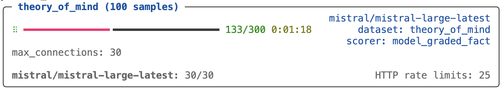

Parallelism
Overview
Inspect runs evaluations using a parallel async architecture, eagerly executing many samples in parallel while at the same time ensuring that resources aren’t over-saturated by enforcing various limits (e.g. maximum number of concurrent model connections, maximum number of subprocesses, etc.).
There are a progression of concurrency concerns, and while most evaluations can rely on the Inspect default behaviour, others will benefit from more customisation. Below we’ll cover the following:
- Model API connection concurrency.
- Evaluating multiple models in parallel.
- Evaluating multiple tasks in parallel.
- Sandbox environment concurrency.
- Writing parallel code in custom tools, solvers, and scorers.
Inspect uses asyncio as its async backend by default, but can also be configured to run against trio. See the section on Async Backends for additional details.
Model Connections
Max Connections
Connections to model APIs are the most fundamental unit of concurrency to manage. The main thing that limits model API concurrency is not local compute or network availability, but rather rate limits imposed by model API providers. Here we run an evaluation and set the maximum connections to 20:
$ inspect eval --model openai/gpt-4 --max-connections 20The default value for max connections is 10. By increasing it we might get better performance due to higher parallelism, however we might get worse performance if this causes us to frequently hit rate limits (which are retried with exponential backoff). The “correct” max connections for your evaluations will vary based on your actual rate limit and the size and complexity of your evaluations.
Note that max connections is applied per-model. This means that if you use a grader model from a provider distinct from the one you are evaluating you will get extra concurrency (as each model will enforce its own max connections).
Rate Limits
When you run an eval you’ll see information reported on the current active connection usage as well as the number of HTTP retries that have occurred (Inspect will automatically retry on rate limits and other errors likely to be transient):

Here we’ve set a higher max connections than the default (30). While you might be tempted to set this very high to see how much concurrent traffic you can sustain, more often than not setting too high a max connections will result in slower evaluations, because retries are done using exponential backoff, and bouncing off of rate limits too frequently will have you waiting minutes for retries to fire.
You should experiment with various values for max connections at different times of day (evening is often very different than daytime!). Generally speaking, you want to see some number of HTTP rate limits enforced so you know that you are somewhere close to ideal utilisation, but if you see hundreds of these you are likely over-saturating and experiencing a net slowdown.
Limiting Retries
By default, Inspect will retry model API calls indefinitely (with exponential backoff) when a recoverable HTTP error occurs. The initial backoff is 3 seconds and exponentiation will result in a 25 minute wait for the 10th request (then 30 minutes for the 11th and subsequent requests). You can limit Inspect’s retries using the --max-retries option:
inspect eval --model openai/gpt-4 --max-retries 10Note that model interfaces themselves may have internal retry behavior (for example, the openai and anthropic packages both retry twice by default).
You can put a limit on the total time for retries using the --timeout option:
inspect eval --model openai/gpt-4 --timeout 600 Debugging Retries
If you want more insight into Model API connections and retries, specify log_level=http. For example:
inspect eval --model openai/gpt-4 --log-level=httpYou can also view all of the HTTP requests for the current (or most recent) evaluation run using the inspect trace http command. For example:
inspect trace http # show all http requests
inspect trace http --failed # show only failed requestsMultiple Models
You can evaluate multiple models in parallel by passing a list of models to the eval() function. For example:
eval("mathematics.py", model=[
"openai/gpt-4-turbo",
"anthropic/claude-3-opus-20240229",
"google/gemini-1.5-pro"
])
Since each model provider has its own max_connections they don’t contend with each other for resources. If you need to evaluate multiple models, doing so concurrently is highly recommended.
If you want to specify multiple models when using the --model CLI argument or INSPECT_EVAL_MODEL environment variable, just separate the model names with commas. For example:
INSPECT_EVAL_MODEL=openai/gpt-4-turbo,google/gemini-1.5-proMultiple Tasks
By default, Inspect runs a single task at a time. This is because most tasks consist of 10 or more samples, which generally means that sample parallelism is enough to make full use of the max_connections defined for the active model.
If however, the number of samples per task is substantially lower than max_connections then you might benefit from running multiple tasks in parallel. You can do this via the --max-tasks CLI option or max_tasks parameter to the eval() function. For example, here we run all of the tasks in the current working directory with up to 5 tasks run in parallel:
$ inspect eval . --max-tasks=5 Another common scenario is running the same task with variations of hyperparameters (e.g. prompts, generation config, etc.). For example:
tasks = [
Task(
dataset=csv_dataset("dataset.csv"),
solver=[system_message(SYSTEM_MESSAGE), generate()],
scorer=match(),
config=GenerateConfig(temperature=temperature),
)
for temperature in [0.5, 0.6, 0.7, 0.8, 0.9, 1]
]
eval(tasks, max_tasks=5)It’s critical to reinforce that this will only provide a performance gain if the number of samples is very small. For example, if the dataset contains 10 samples and your max_connections is 10, there is no gain to be had by running tasks in parallel.
Note that you can combine parallel tasks with parallel models as follows:
eval(
tasks, # 6 tasks for various temperature values
model=["openai/gpt-4", "anthropic/claude-3-haiku-20240307"],
max_tasks=5,
)This code will evaluate a total of 12 tasks (6 temperature variations against 2 models each) with up to 5 tasks run in parallel.
Sandbox Environments
Sandbox Environments (e.g. Docker containers) often allocate resources on a per-sample basis, and also make use of the Inspect subprocess() function for executing commands within the environment.
Max Sandboxes
The max_sandboxes option determines how many sandboxes can be executed in parallel. Individual sandbox providers can establish their own default limits (for example, the Docker provider has a default of 2 * os.cpu_count()). You can modify this option as required, but be aware that container runtimes have resource limits, and pushing up against and beyond them can lead to instability and failed evaluations.
When a max_sandboxes is applied, an indicator at the bottom of the task status screen will be shown:

Note that when max_sandboxes is applied this effectively creates a global max_samples limit that is equal to the max_sandboxes.
Max Subprocesses
The max_subprocesses option determines how many subprocess calls can run in parallel. By default, this is set to os.cpu_count(). Depending on the nature of execution done inside sandbox environments, you might benefit from increasing or decreasing max_subprocesses.
Max Samples
Another consideration is max_samples, which is the maximum number of samples to run concurrently within a task. Larger numbers of concurrent samples will result in higher throughput, but will also result in completed samples being written less frequently to the log file, and consequently less total recovable samples in the case of an interrupted task.
By default, Inspect sets the value of max_samples to max_connections + 1 (note that it would rarely make sense to set it lower than max_connections). The default max_connections is 10, which will typically result in samples being written to the log frequently. On the other hand, setting a very large max_connections (e.g. 100 max_connections for a dataset with 100 samples) may result in very few recoverable samples in the case of an interruption.
If your task involves tool calls and/or sandboxes, then you will likely want to set max_samples to greater than max_connections, as your samples will sometimes be calling the model (using up concurrent connections) and sometimes be executing code in the sandbox (using up concurrent subprocess calls). While running tasks you can see the utilization of connections and subprocesses in realtime and tune your max_samples accordingly.
Solvers and Scorers
REST APIs
It’s possible that your custom solvers, tools, or scorers will call other REST APIs. Two things to keep in mind when doing this are:
It’s critical that connections to other APIs use
asyncHTTP APIs (i.e. thehttpxmodule rather than therequestsmodule). This is because Inspect’s parallelism relies on everything beingasync, so if you make a blocking HTTP call withrequestsit will actually hold up all of the rest of the work in the system!As with model APIs, rate limits may be in play, so it’s important not to over-saturate these connections. Recall that Inspect runs all samples in parallel so if you have 500 samples and don’t do anything to limit concurrency, you will likely end up making hundreds of calls at a time to the API.
Here’s some (oversimplified) example code that illustrates how to call a REST API within an Inspect component. We use the async interface of the httpx module, and we use Inspect’s concurrency() function to limit simultaneous connections to 10:
import httpx
from inspect_ai.util import concurrency
from inspect_ai.solver import Generate, TaskState
client = httpx.AsyncClient()
async def solve(state: TaskState, generate: Generate):
...
# wrap the call to client.get() in an async concurrency
# block to limit simultaneous connections to 10
async with concurrency("my-rest-api", 10):
response = await client.get("https://example.com/api")Note that we pass a name (“my-rest-api”) to the concurrency() function. This provides a named scope for managing concurrency for calls to that specific API/service.
Parallel Code
Generally speaking, you should try to make all of the code you write within Inspect solvers, tools, and scorers as parallel as possible. The main idea is to eagerly post as much work as you can, and then allow the various concurrency gates described above to take care of not overloading remote APIs or local resources. There are two keys to writing parallel code:
- Use
asyncfor all potentially expensive operations. If you are calling a remote API, use thehttpx.AsyncClient. If you are running local code, use the subprocess() function described above. - If your
asyncwork can be parallelised, do it usingasyncio.gather(). For example, if you are calling three different model APIs to score a task, you can call them all in parallel. Or if you need to retrieve 10 web pages you don’t need to do it in a loop—rather, you can fetch them all at once.
Model Requests
Let’s say you have a scorer that uses three different models to score based on majority vote. You could make all of the model API calls in parallel as follows:
from inspect_ai.model import get_model
models = [
get_model("openai/gpt-4"),
get_model("anthropic/claude-3-sonnet-20240229"),
get_model("mistral/mistral-large-latest")
]
output = "Output to be scored"
prompt = f"Could you please score the following output?\n\n{output}"
graders = [model.generate(prompt) for model in models]
grader_outputs = await asyncio.gather(*graders)Note that we don’t await the call to model.generate() when building our list of graders. Rather the call to asyncio.gather() will await each of these requests and return when they have all completed. Inspect’s internal handling of max_connections for model APIs will throttle these requests, so there is no need to worry about how many you put in flight.
Web Requests
Here’s an example of using asyncio.gather() to parallelise web requests:
import asyncio
import httpx
client = httpx.AsyncClient()
pages = [
"https://www.openai.com",
"https://www.anthropic.com",
"https://www.google.com",
"https://mistral.ai/"
]
downloads = [client.get(page) for page in pages]
results = await asyncio.gather(*downloads)Note that we don’t await the client requests when building up our list of downloads. Rather, we let asyncio.gather() await all of them, returning only when all of the results are available. Compared to looping over each page download this will execute much, much quicker. Note that if you are sending requests to a REST API that might have rate limits, you should consider wrapping your HTTP requests in a concurrency() block. For example:
from inspect_ai.util import concurrency
async def download(page):
async with concurrency("my-web-api", 2):
return await client.get(page)
downloads = [download(page) for page in pages]
results = await asyncio.gather(*downloads)Subprocesses
It’s possible that your custom solvers, tools, or scorers will need to launch child processes to perform various tasks. Subprocesses have similar considerations as calling APIs: you want to make sure that they don’t block the rest of the work in Inspect (so they should be invoked with async) and you also want to make sure they don’t provide too much concurrency (i.e. you wouldn’t want to launch 200 processes at once on a 4 core machine!)
To assist with this, Inspect provides the subprocess() function. This async function takes a command and arguments and invokes the specified command asynchronously, collecting and returning stdout and stderr. The subprocess() function also automatically limits concurrent child processes to the number of CPUs on your system (os.cpu_count()). Here’s an example from the implementation of a list_files() tool:
@tool
def list_files():
async def execute(dir: str):
"""List the files in a directory.
Args:
dir: Directory
Returns:
File listing of the directory
"""
result = await subprocess(["ls", dir])
if result.success:
return result.stdout
else:
raise ToolError(result.stderr)
return executeThe maximum number of concurrent subprocesses can be modified using the --max-subprocesses option. For example:
$ inspect eval --model openai/gpt-4 --max-subprocesses 4Note that if you need to execute computationally expensive code in an eval, you should always factor it into a call to subprocess() so that you get optimal concurrency and performance.
Timeouts
If you need to ensure that your subprocess runs for no longer than a specified interval, you can use the timeout option. For example:
try:
result = await subprocess(["ls", dir], timeout = 30)
except TimeoutError:
...If a timeout occurs, then a TimeoutError will be thrown (which your code should generally handle in whatever manner is appropriate).
Async Backends
Inspect asynchronous code is written using the AnyIO library, which is an async backend independent implementation of async primitives (e.g. tasks, synchronization, subprocesses, streams, etc.).
AnyIO in turn supports two backends: Python’s built-in asyncio library as well as the Trio async framework. By default, Inspect uses asyncio and is compatible with user code that uses native asyncio functions.
Using Trio
To configure Inspect to use Trio, set the INSPECT_ASYNC_BACKEND environment variable:
export INSPECT_ASYNC_BACKEND=trio
inspect eval math.pyNote that there are some features of Inspect that do not yet work when using Trio, including:
Full screen task display uses the textual framework, which currently works only with asyncio. Inspect will automatically switch to “rich” task display (which is less interactive) when using Trio.
Interaction with AWS S3 (e.g. for log storage) uses the s3fs package, which currently works only with asyncio.
The Bedrock provider depends on asyncio so cannot be used with the Trio backend.
Portable Async
If you are writing async code in your Inspect solvers, tools, scorers, or extensions, you should whenever possible use the AnyIO library rather than asyncio. If you do this, your Inspect code will work correctly no matter what async backend is in use.
AnyIO implements Trio-like structured concurrency (SC) on top of asyncio and works in harmony with the native SC of Trio itself.
To learn more about AnyIO see the following resources: